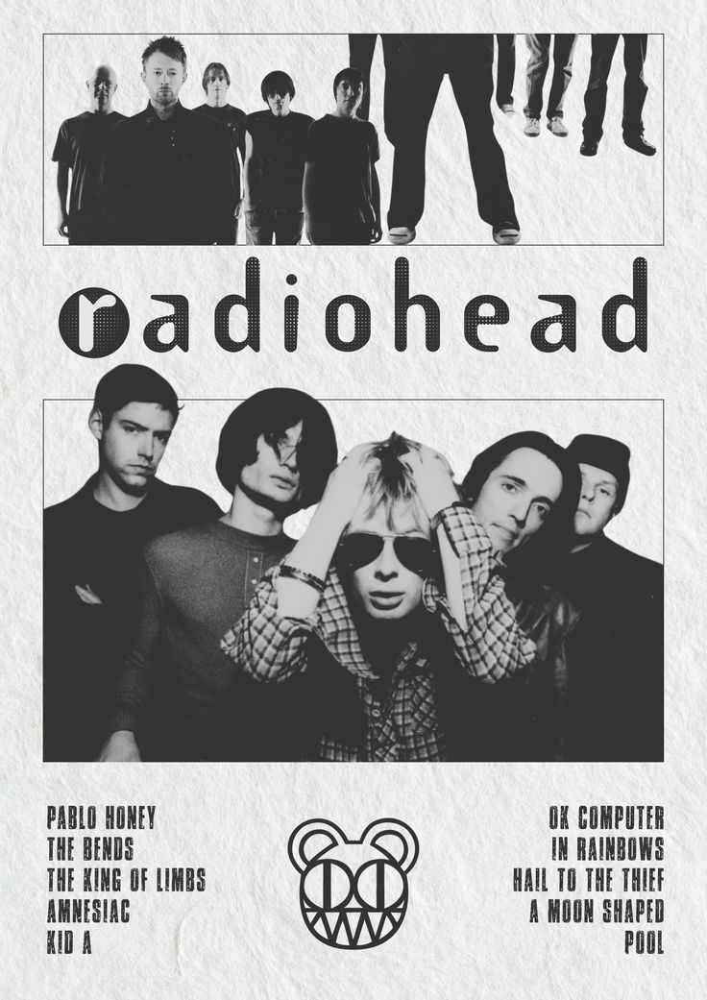

Radiohead are an English rock band formed in Abingdon, Oxfordshire, in 1985. The band members are Thom Yorke (vocals, guitar, keyboards); the brothers Jonny Greenwood (guitar, keyboards, other instruments) and Colin Greenwood (bass); Ed O'Brien (guitar, backing vocals); and Philip Selway (drums). They have worked with the producer Nigel Godrich and the cover artist Stanley Donwood since 1994. Radiohead's experimental approach is credited with advancing the sound of alternative rock. Radiohead signed to EMI in 1991 and released their debut album, Pablo Honey, in 1993. Their debut single, "Creep", was a worldwide hit, and their popularity and critical standing rose with The Bends in 1995. Their third album, OK Computer (1997), is acclaimed as a landmark record and one of the greatest albums in popular music, with complex production and themes of modern alienation. Their fourth album, Kid A (2000), marked a dramatic change in style, incorporating influences from electronic music, jazz, classical music and krautrock. Though Kid A divided listeners, it was later named the best album of the decade by multiple outlets. It was followed by Amnesiac (2001), recorded in the same sessions. Radiohead's final album for EMI, Hail to the Thief (2003), blended rock and electronic music, with lyrics addressing the war on terror. Radiohead self-released their seventh album, In Rainbows (2007), as a download for which customers could set their own price, to critical and commercial success. Their eighth album, The King of Limbs (2011), an exploration of rhythm, was developed using extensive looping and sampling. A Moon Shaped Pool (2016) prominently featured Jonny Greenwood's orchestral arrangements. Four of the members have released solo albums, and in 2021 Yorke and Jonny Greenwood debuted a new band, the Smile. After a hiatus, Radiohead toured Europe in 2025. As of 2011, Radiohead had sold more than 30 million albums worldwide. Their awards include six Grammy Awards and four Ivor Novello Awards, and they hold five Mercury Prize nominations, the most of any act. Seven Radiohead singles have reached the top 10 on the UK singles chart: "Creep" (1992), "Street Spirit (Fade Out)" (1996), "Paranoid Android" (1997), "Karma Police" (1997), "No Surprises" (1998), "Pyramid Song" (2001), and "There There" (2003). "Creep" and "Nude" (2008) reached the top 40 on the US Billboard Hot 100. Rolling Stone named Radiohead one of the 100 greatest artists of all time and included five Radiohead albums in its lists of the 500 greatest albums of all time. Radiohead were inducted into the Rock and Roll Hall of Fame in 2019.